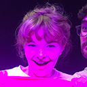
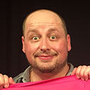

“The bar is set high. Will the chemistry be just as good with the next mystery guests? Take the risk – it's bound to pay off.”
TheatreView
Melbourne International Comedy Festival 2018
3–13 April, Loop Project Space & Bar
Guests selected by Jason Geary
Buy tickets-
Tuesday 3 April, 5:30pmMystery Guest???
-
Wednesday 4 April, 5:30pmMystery Guest???
-
Friday 6 April, 5:30pmMystery Guest???
-
Thursday 5 April, 5:30pmMystery Guest???
-
Tuesday 10 April, 5:30pmMystery Guest???
-
Wednesday 11 April, 5:30pmMystery Guest???
-
Thursday 12 April, 5:30pmMystery Guest???
-
Friday 13 April, 5:30pmMystery Guest???
NZ Fringe Festival 2018
13–16 March, Scruffy Bunny Improv Theatre, Courtenay Place
Guests selected by Christine Brooks
-
Tuesday 13 March, 8:00pmJonny PaulWellington
-
Wednesday 14 March, 8:00pmMichelle MarloweUSA/Wellington
-
Thursday 15 March, 8:00pmLibby KlyszPerth
-
Friday 16 March, 8:00pmAbby HowellsDunedin
Nelson Fringe Festival 2016
5 May, 2016, Refinery ArtSpace
Guests selected by Laura Irish
-
Thursday 5 MayJeff ClarkChristchurch
-
Thursday 5 MayLinda CalgaroNelson
-
Thursday 5 MayJason GearyMelbourne
NZ Fringe Festival 2016
11–14 February, BATS Theatre
Guests selected by Christine Brooks
-
Thursday 11 February, 9:00pmLaura IrishNelson
-
Friday 12 February, 9:00pmFreya Daly SadgroveWellington
-
Saturday 13 February, 9:00pmDavid InnesMelbourne
-
Sunday 14 February, 9:00pmDaniel AllanNelson